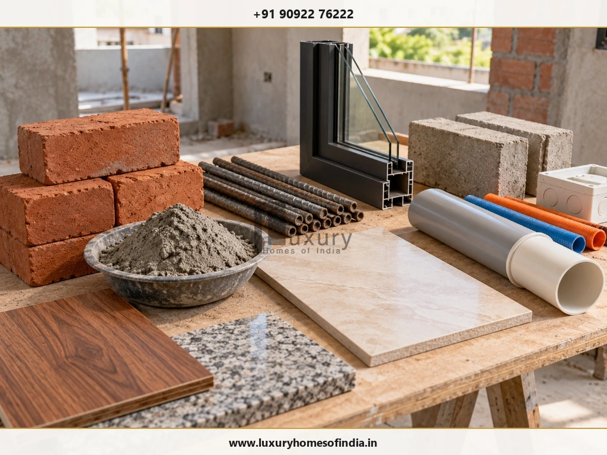
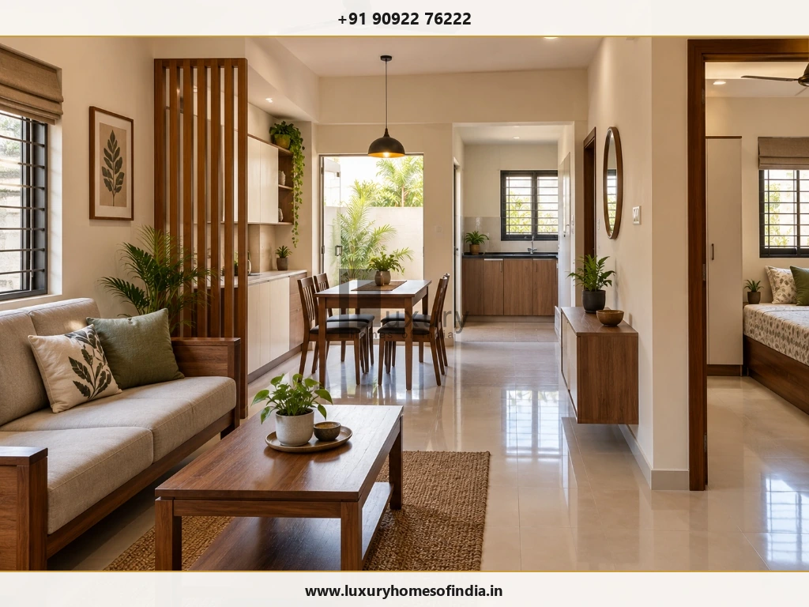
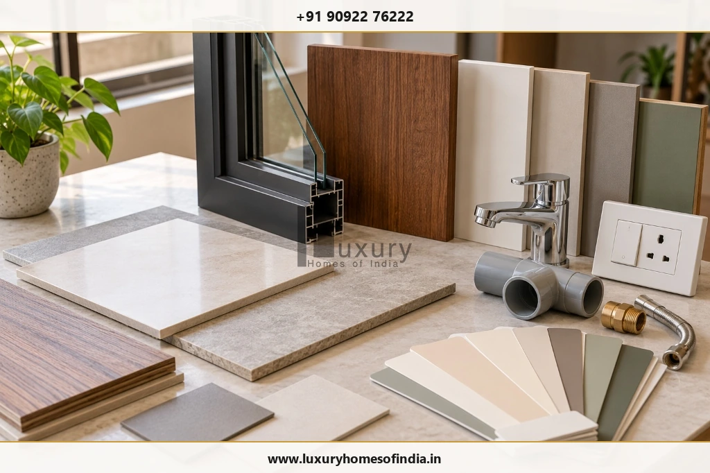

Building a low-budget house in Chennai starts with a realistic total budget, a practical floor plan and a clear understanding of construction costs. The amount you need depends on your home's built-up area, soil conditions, foundation design, material specifications, labour, finishing level and the work included in your contractor's quotation. For illustration, a core construction assumption of ₹1,800–₹2,200 per sq. ft. produces a calculated range of ₹10.8–₹13.2 lakh for a 600 sq. ft. home and ₹18–₹22 lakh for a 1,000 sq. ft. home. These figures are planning examples, not verified LHI rates or complete move-in budgets. Land, approvals, professional fees, utilities, compound walls and interiors may require separate allowances. The most effective savings come from simplifying unnecessary design complexity, finalising specifications early and comparing equivalent quotations—not reducing structural safety or essential construction quality.

A contemporary compact single-level home in Chennai illustrating budget-conscious residential architecture, clean geometric massing, and cost-effective construction planning.
1. What Is the Cost to Build a Low-Budget House in Chennai?
There is no single construction price that applies to every house in Chennai. Two homes with the same built-up area may have different costs because of foundation requirements, structural design, materials, finishes, access to the site and the scope of work.
For preliminary calculations, the following table uses an illustrative core construction assumption of ₹1,800–₹2,200 per sq. ft. This rate must be validated against the specifications and quotations applicable to your project before it is used to make a financial commitment.
| Built-up Area | At ₹1,800 / sq. ft. | At ₹2,000 / sq. ft. | At ₹2,200 / sq. ft. |
|---|---|---|---|
| 600 sq. ft. (1 BHK / Compact 2 BHK) | ₹10.8 lakh | ₹12.0 lakh | ₹13.2 lakh |
| 800 sq. ft. (Comfortable 2 BHK) | ₹14.4 lakh | ₹16.0 lakh | ₹17.6 lakh |
| 1,000 sq. ft. (Spacious 2 BHK / 3 BHK) | ₹18.0 lakh | ₹20.0 lakh | ₹22.0 lakh |
| 1,200 sq. ft. (Standard 3 BHK) | ₹21.6 lakh | ₹24.0 lakh | ₹26.4 lakh |
How Much Space Do You Actually Need?
Choosing the right built-up area is the single largest financial lever you have when planning a budget-conscious home:
- 600 sq. ft.: A compact option for a household that can work with a carefully planned layout and limited storage. Ideal for a starter home or retirement unit.
- 800 sq. ft.: Offers more flexibility for two comfortable bedrooms, living space, kitchen arrangements and essential circulation without wasted square footage.
- 1,000 sq. ft.: Allows greater flexibility in room sizes, dedicated dining or pooja areas, and expanding household requirements.
- 1,200 sq. ft.: Provides additional space but proportionally increases the overall construction budget at the same assumed square-foot rate.
The best choice is not necessarily the smallest house you can build. It is the smallest practical layout that meets your household's needs without creating avoidable compromises in comfort, accessibility or future use.
2. What Is Included in a House Construction Rate?

Construction site bench showing essential core building materials: red clay bricks, cement mortar, steel rebars, UPVC frames, AAC blocks, and plumbing conduits.
A per-square-foot rate is useful only when you understand what it covers. One contractor's basic package may include selected finishes and services, while another quotation may exclude several of those items.
Depending on the contract, a core construction package typically includes:
- Excavation and foundation work based on standard soil assumptions.
- Reinforced concrete (RCC) structural frame specified in structural drawings.
- Columns, plinth beams, lintels, and roof slabs.
- Brickwork or blockwork for external and internal partition walls.
- Internal plastering (smooth finish) and external plastering (weather-resistant coat).
- Basic flooring tiles, flush doors, and standard window joinery.
- Electrical conduit piping, wiring, and specified switch points.
- Concealed plumbing water lines, drain lines, and standard sanitary fittings.
- Internal wall putty with emulsion paint and external weather-shield painting.
- Internal or external staircase work, where applicable.
The exact scope must be confirmed in writing. Basic wiring, for example, does not necessarily include decorative light fittings, and standard bathroom fittings do not necessarily include premium sanitaryware or hot-water geyser lines.
Expenses to Budget Separately
A frequent pitfall in home construction is treating the contractor's building rate as the total project expense. The table below outlines essential items that almost always require separate allowances:
| Expense Category | What to Check & Verify |
|---|---|
| Land and registration | Budget completely separately from construction contracts; include stamp duty and legal verification fees. |
| Design and engineering | Confirm architectural, structural, and MEP engineering fees and milestone drawing deliverables. |
| Soil investigation | Establish site-specific ground and foundation requirements before finalizing footings. |
| Approvals and statutory charges | Confirm the applicable municipal authority (CMDA, GCC, or DTCP), scrutiny fees, and development charges. |
| Compound wall and gate | Check whether external boundary wall linear footage and MS main gate fabrication are quoted. |
| Sump, borewell and drainage | Determine underground water sump capacity, borewell drilling depth, and septic tank or sewer connection. |
| Utility connections | Include permanent TANGEDCO electricity meter deposit, CMWSSB metro water, and sewerage charges. |
| Kitchen and wardrobes | Confirm whether built-in modular kitchen carcasses, shutters, and bedroom wardrobes are included. |
| Appliances and furniture | Fans, water heaters, AC units, and movable loose furniture require a separate household allowance. |
| Site filling and paving | Check existing road levels versus plot elevation; budget for red earth filling and driveway pavers. |
| Contingency reserve | Maintain a 10%–15% buffer for unforeseen site conditions, price variations, or approved design additions. |
Not every project needs every item. Prepare a property-specific checklist and obtain itemised estimates for the items that apply to your specific plot.
3. How to Design a Low-Budget House Without Wasting Space

A thoughtfully integrated compact residential interior connecting the living room, dining space, semi-open kitchen, and bedroom suite without space-consuming corridors.
A cost-conscious house should make good use of every square foot. The aim is to improve everyday functionality while avoiding unnecessary construction complexity.
Choose a Simple Building Shape
A straightforward rectangular or near-rectangular footprint can simplify aspects of structural coordination, wall construction and roofing. Numerous projections, zigzag offsets, cantilevered balconies, and complicated roof forms add formwork carpentry, extra steel cutting, and higher labour costs.
A simple exterior can still look refined. Well-proportioned windows, thoughtful shading chajjas, appropriate plaster textures, and a balanced façade can create visual appeal without expensive decorative cladding or ornamental parapets.
Reduce Unnecessary Circulation Space
Long corridors and oversized entrance lobbies consume built-up area without providing usable living space. A practical layout connects rooms efficiently through central living or dining hubs, preserving privacy while enabling comfortable movement.
Coordinate Kitchens and Bathrooms
Planning wet areas (kitchen, utility, and bathrooms) back-to-back or in close vertical proximity significantly shortens plumbing pipe runs, minimizes wall chiseled grooves, and makes future maintenance straightforward.
Plan Storage Before Construction
Decide where wardrobes, kitchen lofts, utility shelving, and under-stair storage will go during drawing stages. Early planning prevents awkward leftover niches and expensive civil alterations after plastering is finished.
Design for Natural Light and Ventilation
Well-positioned openings capture cross-ventilation and natural daylight, reducing daytime electrical lighting and mechanical cooling loads. Consider sun angles, weather exposure, and privacy rather than simply maximizing glass pane dimensions.
4. How to Choose Materials for an Economical House

Material selection review board showcasing standardized vitrified floor tiles, durable UPVC window profiles, CPVC plumbing fittings, modular switches, and quality emulsion palettes.
Material selection should consider purchase price, installation cost, performance, maintenance, and regional availability. A low-budget house does not need premium imported finishes everywhere, but essential engineering criteria must never be compromised.
Cement and Reinforcement Steel
Use ISI-certified cement (such as OPC 53 for structural elements and PPC for masonry/plastering) and primary Fe-500 or Fe-550 TMT rebars. Compare product specifications, bulk quantity discounts, delivery charges, and supplier credit terms. Never downsize steel bar diameters or structural footing dimensions to save money.
Bricks and Blocks
Choose between traditional country clay bricks, wire-cut fly-ash bricks, or AAC (autoclaved aerated concrete) blocks based on soil conditions and structural design. AAC blocks reduce dead weight and plastering mortar consumption, whereas local bricks may offer easier handling for smaller single-storey builds. Compare the complete laid cost rather than unit material price alone.
Flooring
Standard 2×2 ft or 4×2 ft vitrified tiles provide high durability, stain resistance, and straightforward maintenance at a fraction of natural marble or granite costs. Compare tile prices alongside laying labour, adhesive bed thickness, and wastage percentages.
Doors and Windows
Standard modular dimensions reduce fabrication wastage. Factory-manufactured UPVC or anodized aluminum sliding windows often deliver superior weather sealing, termite resistance, and lower lifetime maintenance compared to raw timber frames that require continuous polishing.
Paint and Wall Finishes
Simple, elegant light-toned paint schemes enhance perceived interior volume without escalating costs. Ensure proper wall curing, two coats of water-resistant wall putty, and a high-coverage acrylic emulsion for clean, durable surfaces.
Plumbing and Electrical Materials
Choose reputable CPVC and UPVC pipes (such as Astral or Ashirvad) and flame-retardant (FR) multi-strand copper wiring (such as Finolex or Polycab). Do not compromise on earthing, circuit breaker protection (MCBs and RCCBs), or reliable waterproofing membranes just to reduce an initial quotation.
5. Can You Build a Low-Budget House in Stages?
A phased approach may help a homeowner manage available funds, but the building strategy must be engineered and permitted before construction begins.
One popular option is to construct a compact, fully functional ground floor first (G+0) and plan a future vertical extension (first floor) when finances permit.
Key Checklist Before Planning a Future Vertical Extension:
- Permissible FSI & Approvals: Confirm whether the CMDA or DTCP approved plan accounts for future floor additions under local building rules.
- Structural Footings & Column Load Capacity: Ensure the structural engineer designs footings, columns, and plinth beams to safely bear the dead and live loads of the future upper storey.
- Rebar Stub Details: Column starter bars must be properly coated with cement slurry or protective caps on the terrace slab to prevent corrosion until future construction resumes.
- Plumbing and Electrical Conduit Stubs: Leave dedicated drainage vents, soil stacks, and electrical service raceways extending through the slab.
- Tenant / Occupant Disruption: Understand how access to the roof will work without intruding into ground-floor private living spaces.
Never assume that a single-storey house built with nominal foundations can safely support another floor later. The future structural configuration must be designed and stamped by a licensed structural engineer from day one.
7. Five Practical Ways to Keep Construction Within Budget
Managing costs effectively requires proactive coordination rather than reacting to expenses as they occur. Follow these five proven construction principles:
1. Set the Total Budget First
Allocate funds for municipal approvals, utilities, site filling, basic interiors, and contingency before calculating how much is left for core civil work.
2. Finalise Drawings Early
Freeze architectural floor plans and structural drawings before breaking ground. Ambiguity in drawings directly leads to contractor disputes and extra charges.
3. Compare Equivalent BOQs
Request detailed itemised Bills of Quantities (BOQ) from at least 2–3 reputable builders based on the exact same material specifications and scope inclusions.
4. Tie Payments to Milestones
Structure your contract so payments are released only after verifying physical completion of stages: plinth beam, lintel, roof slab, masonry, and plastering.
5. Strictly Restrict Mid-Construction Changes
Select all tiles, sanitary fittings, and paint swatches before the respective work begins. If a variation is necessary, document its cost and time impact in writing before work begins.
Frequently Asked Questions
Conclusion: Build Within Your Budget Without Compromising Quality
The cost to build a low-budget house in Chennai depends on more than a per-square-foot rate. The site's conditions, foundation design, built-up area, material selection, finishes and agreed construction scope all influence the final investment.
A compact layout, early design decisions, suitable standard materials and transparent quotations can help control expenditure. Structural safety, appropriate waterproofing, compliant services and sound workmanship must remain priorities.
Start by establishing a realistic total budget, documenting the required scope and obtaining a project-specific estimate based on the actual property and design.
Planning to Build Your Home in Chennai?
Explore Luxury Homes of India, review our residential construction services, view the LHI gallery, or contact our team to discuss your requirements.
Disclaimer: All cost figures are illustrative planning calculations, not a binding LHI quotation or a verified current market rate. Actual prices depend on site conditions, design, specifications, scope, applicable charges and contract terms. Obtain a site-specific estimate and professional assessment before committing to construction.
Written by: LHI Editorial Team • Technical Review: LHI Structural & Engineering Operations Desk